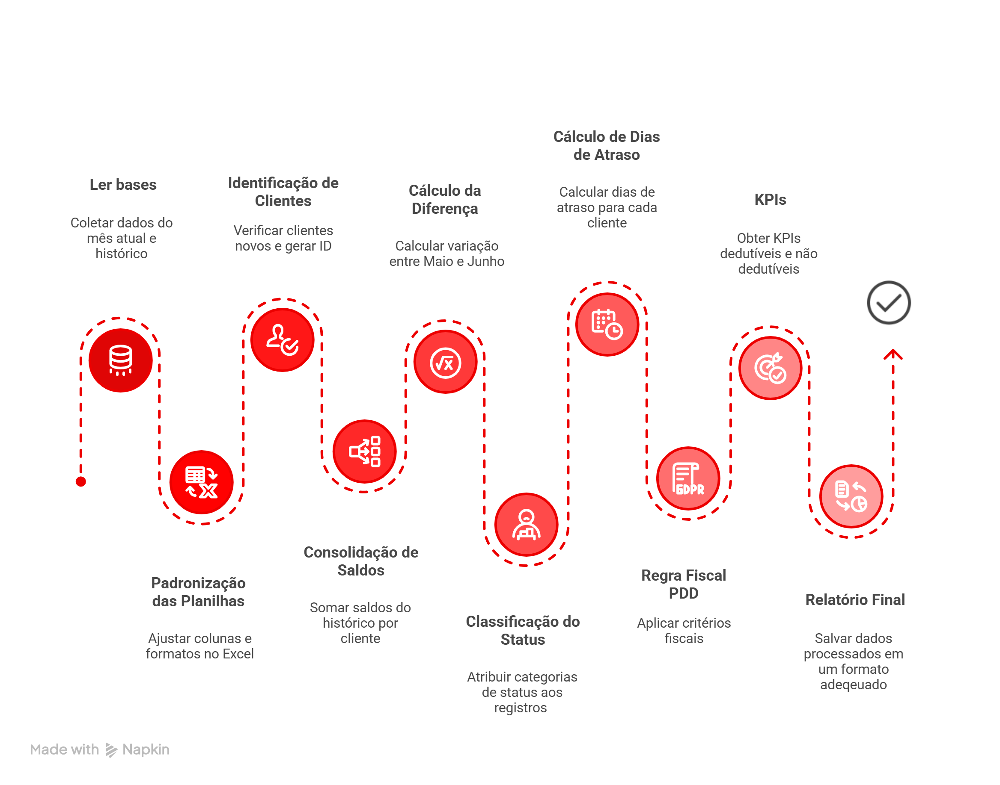

De processo manual e frágil para um fluxo auditável, rastreável e orientado a regras
Este é um projeto autoral que aplica lógica contábil e fiscal à automação de um processo típico de consolidação de PDD Fiscal, com foco em governança, padronização e evidência para auditoria.
Finance Transformation · Dados · GovernançaO problema (visão de negócio)
No modelo manual, o fluxo depende de planilhas, fórmulas e validações interpretativas. Isso aumenta o risco de inconsistência fiscal, reduz rastreabilidade e gera retrabalho.
~2h30/mês
Tempo manual estimado
< 1 minuto
Tempo automatizado
~98%
Redução operacional estimada
Nota de governança: este material é educacional e autoral. Usei dados e cenários
simulados para demonstrar a lógica de negócio e a estrutura de automação.
Entregáveis
Você pode navegar pelos materiais abaixo.
Dica: no LinkedIn, use esta página como “fonte única” para comprovar profundidade e facilitar a leitura do recrutador.

Infográfico executivo: dor → solução → regras → impacto (material gerado em NotebookLM e ajustado para a marca Analiz).

Fluxo visual do processo (Napkin): visão de pipeline e etapas de tratamento / regras / saída.
Arquitetura (alto nível)
A automação orquestra o trabalho ponta a ponta:
- Carregar bases do mês e histórico
- Tratar e padronizar estrutura (ETL)
- Identificar novas CCBs, quitações e variações entre períodos
- Calcular tempo de atraso
- Aplicar regras fiscais de dedutibilidade
- Consolidar resultados e exportar evidências (KPIs/relatório)
Princípio do projeto: regra de negócio clara + rastreabilidade + documentação como parte do produto.